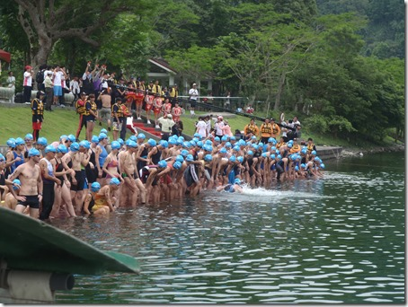
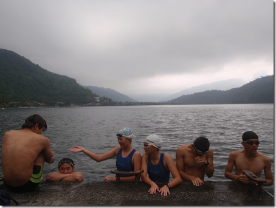
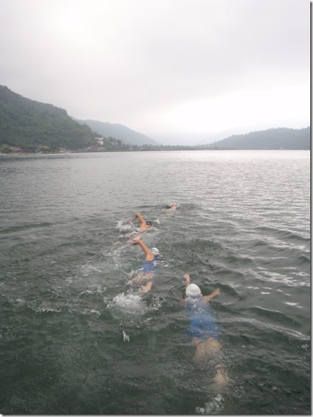
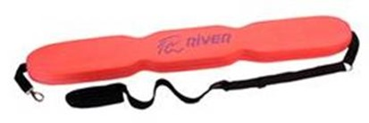

開放式水域游泳指南一：害怕開放式水域的人該如何克服恐懼？

【圖】花蓮鯉魚潭
不敢在湖、潭、海等開放式水域中游泳的人，一般來說都是出自恐懼，而恐懼的原因有兩類：其一是對自己的泳技沒信心，很怕「游到一半沉下去怎麼辦」，怕游到到潭中游不到沒地方靠岸，或是怕「游到一半抽筋就死定了」，這是對自己體能信心不足所產生的恐懼感；其二是對失去視覺上目標物所產生的失視恐懼，在開放式水域中大多是深不見底，不像泳池中有具體的池底池磚、有標線、有對岸的牆面可依靠，但開放式水域中泳鏡外卻只有混沌與矇矓，所以心裡自然會對外在環境產生不信任感，這跟對自己本身沒信心是不同的。
頻繁的練習與完成長泳目標能降低恐懼：
如果你現在還很害怕在開放式的水域中游泳，先問自己是屬於哪一類人。
假如你是屬於「對目前游泳能力沒信心」的那一類，卻已經決心完成鐵人三項(已報名不得不面對)，克服恐懼的第一步相當明確：那就是先要能在泳池中足不著地游完一千五百公尺。只要你能做到這點，相信你必須經過一段時間的練習，頻繁的練習與成功連續游完千五，會帶來大量的自信心，當你再到開放水域時，你只要想「不管水有多深都是在水面上游，我都已經能游千五了所以也沒什麼好怕的」，應該就沒問題了。
找夥伴陪你去開放式水域訓練

假如你是屬於第二類，游千五對你來說不是問題，只是你對「深不見底」與「混沌不清」的湖/海水感到恐懼，解決的辦法是找泳技較高的人陪你一起去開放式水域練習，讓他游在你習慣換氣的方向（例如你游蛙式就讓他游在你前頭，游自由式右邊換氣就讓他游在你的右側），請你的夥伴配合你的速度游，如此一來你每次你換氣都可以看到你的夥伴。當你把視覺上的注意力放在你的夥伴身上頭，就會忽視掉「在水中什麼都看不到」這件事，那恐懼感就會下降。

###
使用「魚雷浮標」

在開放式水域中練習時把魚雷浮標繫在腰上，因為這種浮標呈長條狀，所以拖著它游進時阻力不大。但若有突發狀況，它的浮力絕不會讓你沉入水中。它的另一個作用則是減緩你的恐懼感，因為背著它游你會很安心，你會比較敢游向無岸可靠的湖／海中，就算游不動了或抽筋力你還是可以立即轉過身來抱住它。所以非常建議頭幾次剛在陌生水域練泳的初鐵選手使用魚雷浮標訓練，它除了能保護你的安全也能安你的心。
Youtube上的示範影片：http://www.youtube.com/watch?v=NpSE1JLzDn4